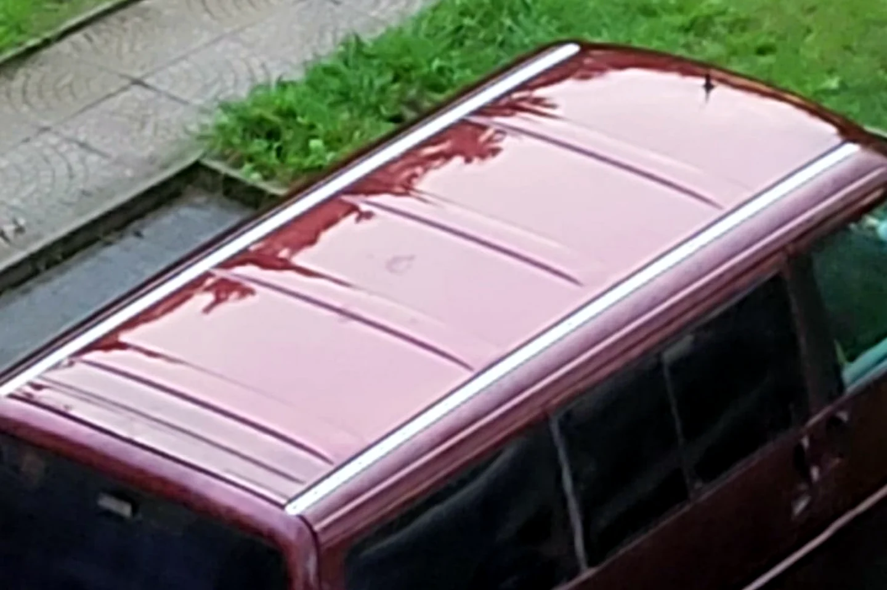

Neue Airlineschienen für den Roten — endlich Platz fürs Gepäck auf dem Dach

In einem T4 wird jeder freie Zentimeter irgendwann wertvoll. Am Anfang denkt man noch: Das passt schon alles hinein. Dann kommen Tisch, Teppich, Werkzeug, Vorräte und all die Dinge dazu, die das Leben unterwegs angenehm machen. Beim Roten war deshalb schnell klar: Wenn sperriges Gepäck aus dem Innenraum verschwinden soll, muss das Dach mitarbeiten.
Warum ich mich für Airlineschienen entschieden habe
Ich wollte keine starre Lösung, die nur für eine einzige Kiste passt. Airlineschienen geben mir mehrere Befestigungspunkte und damit mehr Freiheit beim Packen. Je nach Reise kann oben eine Dach- oder Gepäcktasche befestigt werden, während der Innenraum zum Wohnen frei bleibt. Gerade bei längeren Touren ist dieser Unterschied riesig: Ich muss nicht jeden Abend mein halbes Zuhause umräumen, bevor ich ins Bett kann.
Auf dem Foto sieht man die beiden Schienen längs auf dem Dach. Genau so wollte ich es: schlicht, stabil und ohne unnötigen Schnickschnack. Die Schienen selbst sind aber nur ein Teil der Lösung. Entscheidend ist immer das gesamte System aus Dach, Befestigung, passenden Fittings, Zurrmitteln und der tatsächlichen Dachlast des Fahrzeugs.
Was bei mir aufs Dach darf
Mein Grundsatz ist einfach: sperrig und möglichst leicht nach oben, schwer nach unten. Das verbessert nicht nur die Ordnung, sondern hält auch den Schwerpunkt vernünftig. Alles, was nass werden könnte oder empfindlich ist, braucht zusätzlich eine wetterfeste Verpackung. Vor jeder Abfahrt kontrolliere ich, ob Gurte und Befestigungspunkte fest sitzen. Nach den ersten Kilometern schaue ich noch einmal nach — lieber einmal zu viel als einmal zu wenig.
Mehr Platz bedeutet mehr Ruhe
Der größte Gewinn war für mich nicht das Dach an sich, sondern der ruhigere Innenraum. Dinge haben plötzlich einen festen Platz. Die Sitz- und Schlafbereiche bleiben nutzbar, und beim Halt muss nicht erst eine Gepäcklawine bewegt werden. Genau solche kleinen Umbauten machen aus einem Auto Schritt für Schritt ein Zuhause.
Die Airlineschienen waren deshalb kein Deko-Projekt, sondern eine praktische Entscheidung für meinen echten Reisealltag. Sie haben den Roten nicht größer gemacht — aber sie haben dafür gesorgt, dass sich der vorhandene Platz viel größer anfühlt.
Bis bald und immer gute Fahrt,
eure Tussy 💛